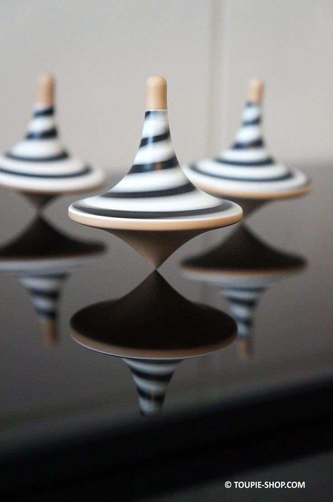
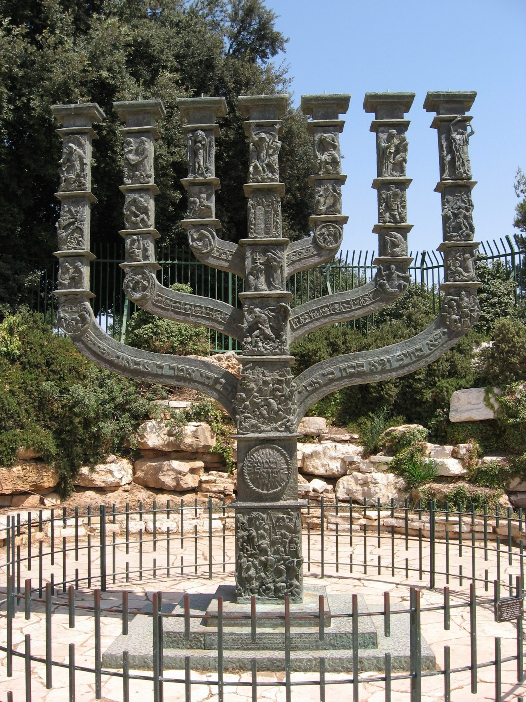
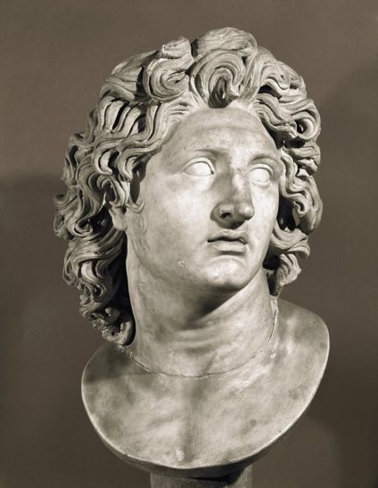
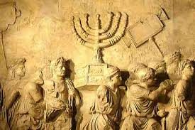
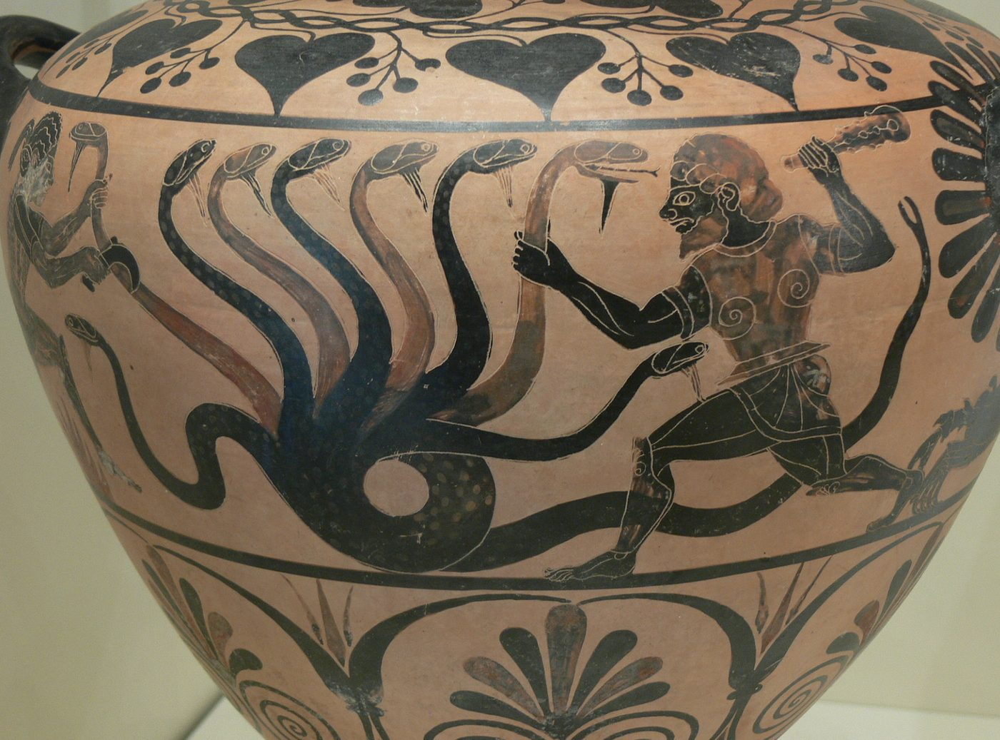
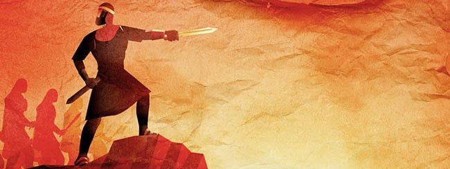
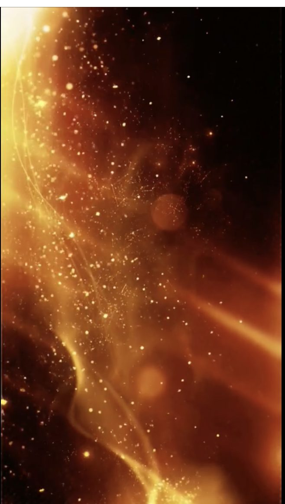
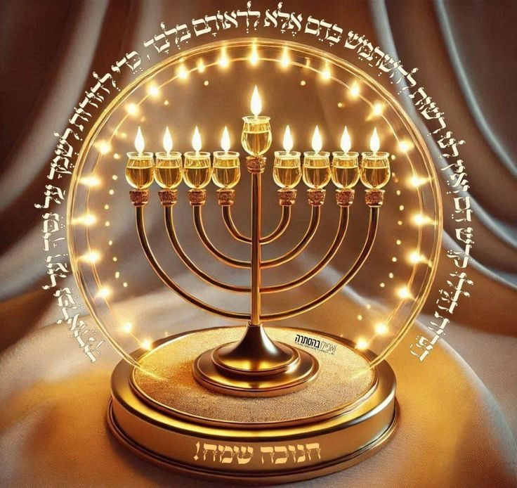
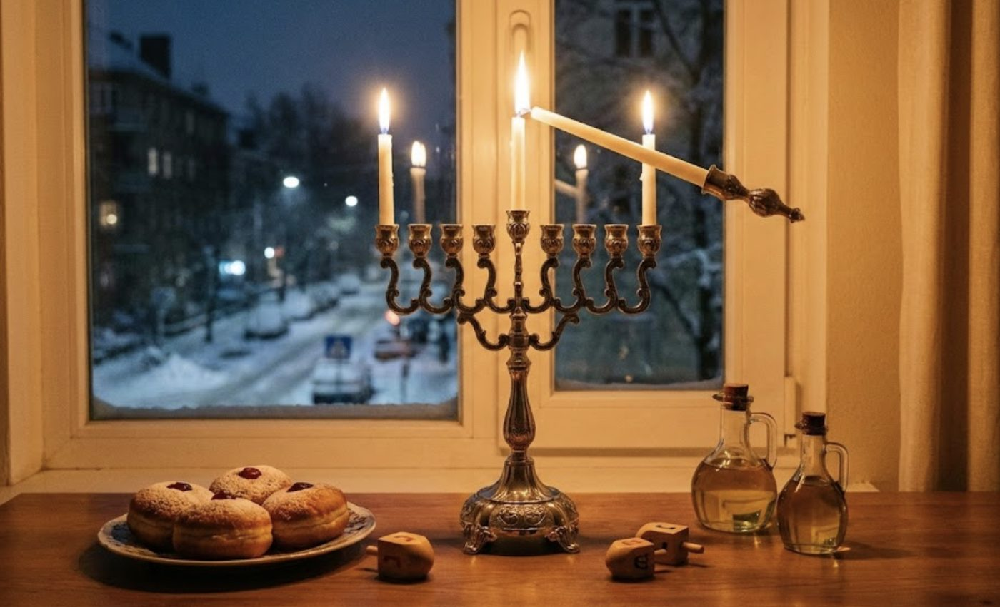
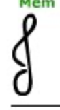

Vayechev Hanouka 5786
Installer la lumière
La lumière du temps
Dans la structure cyclique du calendrier juif, le temps n’est pas une simple progression linéaire ni une course inéluctable vers l’entropie. C’est une spirale ascendante où les événements du passé ressurgissent, chaque année, chargés d’une énergie spirituelle renouvelée. C’est l’explication profonde du principe de Zman Garama (qui correspond à une obligation technique du temps au sens talmudique) : le temps, en lui-même, devient la matrice et gorem la cause de l’influx spirituel. Il est ainsi observé que la lecture de la Paracha Vayechev, qui relate essentiellement les tribulations de Yossef, sa vente, sa descente en Égypte et son épreuve face à l'immoralité, coïncide presque invariablement (environ 9 années sur 10) avec le début de la semaine de Hanouka le 25 du mois de Kislev. Cette proximité n’est pas un accident du calendrier : elle constitue une révélation, un dévoilement discret, puissant, que nous tenterons de décrypter selon la mystique juive et le Hassidisme, en nous appuyant en particulier sur trois de ses piliers : le Bnei Yissaschar (Rabbi Tzvi Elimelech de Dinov), le Megalé Amoukot (Rabbi Natan Nata Shapira), et le Torah Or de Rabbi Chnéour Zalman de Lyadi. |
 |
|---|
Nous tenterons de montrer, avec l’appui des enseignements de ces Maîtres et l’aide du Ciel, que Yossef n’est pas seulement un protagoniste biblique traversant l’obscurité de l’exil égyptien en devenant le maître, il est l’incarnation du Yessod, l’attribut du Fondement, le canal pur par lequel la structure des mondes se propage jusqu’à notre réalité physique, celui sur lequel on s’appuie, on se tient.
Et c’est justement cette qualité intérieure, cette transparence absolue, cette fidélité intacte à la Source, qui possède la capacité de s’opposer à la sagesse grecque. Car la Grèce, en vérité, ne cherchait pas tant à nous détruire physiquement mais plutôt à déraciner notre intériorité, à couper Israël de sa lumière, à dessécher son lien vivant avec le Divin.
C’est cette même force du Yessod, la continuité ininterrompue de la lumière, qui permit à une poignée de Cohanim de se dresser, non seulement en guerriers, mais en représentants d’une résistance spirituelle, face à l’empire gréco-assyrien. Leur victoire militaire fut impressionnante, mais leur véritable triomphe a été la purification du Beth Hamikdach par la redécouverte d’une petite fiole d’huile pure, intacte qui n’aurait dû brûler qu’un seul jour, mais qui illumina miraculeusement pendant huit jours. La ménora le chandelier sacré dévoilant une lumière hors du temps, un éclat d’infini introduit au cœur du fini.
Et c’est bien en souvenir de ce miracle, de cette persistance de la lumière contre toutes les forces de l’obscurité, que nous avons, à notre tour, la mitsva d’illuminer nos foyers et nos vies.
La lumière durant l’exil grecque
Hanouka, un miracle tardif dans un exil intérieur
La fête de Hanouka apparaît tard dans l’histoire d’Israël et constitue l’un des derniers miracles révélés avant la disparition de la prophétie.
Elle éclot dans une période paradoxale : le deuxième Temple est reconstruit en Erets Israël, mais les Sages le décrivent comme un temps d’exil d’un type particulier : Il se déroule sur la terre d’Israël elle-même, montrant que l’exil n’est pas d’abord une distance géographique, mais un déracinement intérieur. C’est une infiltration subtile dans la manière de penser, de regarder le monde, de se relier au spirituel. Le danger grec n’est pas nécessairement militaire. Il est conceptuel, philosophique, esthétique. La pensée grecque s’introduit jusque dans l’intériorité d’Israël, jusqu’au Heikhal du Temple, dont la gematria est identique à celle de Yavan la Grèce. L’attaque ne vise plus des comportements ponctuels, mais la structure même de la conscience. Les Grecs n'ont pas interdit d'être juif ethniquement. Ils ont interdit le Shabat, la Circoncision (Mila) et la Sanctification du mois (Rosh Hodesh). Pourquoi ces trois-là ? Parce qu'ils témoignent que la sainteté dépasse la nature. Le Shabat nie que le monde est seulement naturel (le monde a un Créateur). La Mila nie que le corps est parfait par nature (il doit être parachevé). Rosh Hodesh nie que le temps est fixe (l'homme a le pouvoir de le sanctifier). |
 Figure 1 Menorah de la knesset illustrant les macabims au socle de la structure |
|---|
Tel est le sceau de Yavan : un exil dans la perception, dans la manière même de concevoir la réalité. Un juif « yavanique » peut prier, étudier, fréquenter la synagogue et pourtant être entièrement déconstruit intérieurement. Son langage dominant devient alors le Grec, tandis que la prophétie, l’expression du lien direct entre D. et l’homme, disparaît1
Yossef, le feu qui devient flamme
Lors de la naissance de Yossef, Rachi commente le verset Genèse 37:1 et nous enseigne que la maison de Yaakov est un feu, celle de Yossef une flamme, et celle d’Essav de la paille (voir aussi chiour Vayetsé sur cette notion). Tant que Yossef n’était pas né, Yaakov n’avait pas la force d’affronter Essav. Si la dimension de Yaakov possède un feu intense il reste concentré, c’est un feu intérieur qui ne s’étend pas.
Pour vaincre Essav, il faut un feu capable de se projeter, de toucher à distance, d’enflammer ce qui semble extérieur : c’est le rôle de Yossef. La paille n’a aucune solidité réelle. Elle ne menace que lorsqu’elle reste hors de portée du feu car elle peut être utilisée pour fabriquer des briques et construire des édifices. Israël ne peut alors vivre uniquement d’un feu intérieur ; ce dernier doit être capable de rayonner et pour cela il faut étouffer Essav. Le Sfat emet nous apprend que si la Torah introduit la descendance d’Essav (passage des 7 rois) par l’expression « Elé toldot Essav », elle introduira à la paracha suivante Yossef par l’expression « Elé toldot Yossef » au début de notre paracha pour montrer que Yossef reprend le flambeau du combat contre Essav et qu’il réussira (nous irons un peu plus loin sur la notion de Elé à la fin du chiour).
Car c’est ce que la Torah enseigne : tant que le feu de Yaakov ne devient pas flamme, il n’est pas encore Israël. Yaakov, pourtant installé paisiblement dans la maison de ses pères comme l’indique l’ouverture de Vayechev, envoie Yossef surveiller les troupeaux et observer ses frères. Il sait probablement que cette mission conduira son fils vers l’Egypte où il devra grandir et préparer le terrain de l’exil égyptien.
Et ce n’est que lorsqu’il apprend que Yossef a survécu matériellement et spirituellement en Égypte que la Torah l’appelle à nouveau Israël. Vingt-deux années d’attente, d’espérance et de deuil seront nécessaires pour que la dimension d’Israël, celle qui rayonne, soit restaurée et brille à nouveau. Très brillamment nos sages et rabbi Yaakov abouhatseira en particulier nous enseigne que Yaakov et Yossef sont tous les deux représentés par la lettre Vav ו, qui en écriture pleine, c’est-à-dire écrite comme prononcé, en miloui, s’écrit Vav et Vav : ו׳׳ו nous montrant ainsi que Yossef est le continuité, l’expression, la flamme de Yaakov.
La beauté de Yossef face à la beauté grecque
Yossef est beau, et la Torah le souligne : il passait du temps à se faire beau, avait trouvé grâce aux yeux de la femme de Potiphar qui jeta son dévolu sur lui, le Midrach raconte que plus tard lorsqu’il défilait dans les rues d’Egypte en tant que vice-roi d’Égypte, les jeunes filles, grimpaient sur les murailles pour l’apercevoir. Mais ce détail n’est pas anecdotique, car la Grèce place aussi la beauté au centre, le corps comme l’ultime objectif humain, mais son esthétique est fermée puisqu’elle glorifie le visible et nie ce qui le dépasse. Elle proclame que le monde est achevé, parfait tel qu’il est et que les d.ieux restent en Olympe tandis que les hommes s’affrontent pour attirer leurs faveurs lors des Jeux Olympiques. La beauté de Yossef est l’exact contraire de la beauté grecque puisqu’elle révèle au lieu de masquer. Elle n’existe que pour laisser transparaître l’intériorité, et démontrer que le monde visible n’est qu’un vêtement de la volonté divine. |
 Figure 2 Buste d'Alexandre le Grand (356-323 av. J.-C.), roi de Macédoine et conquérant de la Perse |
|---|
En ce sens Yossef est la digne continuité de la Yaakov qui incarne la Vérité, car la Vérité ne peut qu’être belle et que la seule beauté de ce monde est la Vérité.
Si Yavan dit que le monde est complet, Yossef lui répond qu’il manque l’essentiel : la présence de D.. Le Megalé Amoukot illustre cette opposition en précisant notamment que Meleh Yavan a la meme gematria que Yossef (Megale amoukot vaethanan 252). D’autres commentateurs comme le Zera kodesh (hanouka 5) poursuivent cette idée et explique que :
Yavan יון écrit avec les lettres youd vav noun, représente une sagesse qui descend mais s’enfonce dans la matérialité : le youd s’étend vers le bas formant un vav mais continue sa chute dans la terre formant un noun.
Yossef écrit יוסף youd vav samekh pé sophit, représente la même descente de la lumière dans le monde mais qui se referme en un cercle complet pour s’exprimer. C’est le même youd que l’on descend vers le monde mais qui reforme une boucle (le sameh) pour intérioriser et remonter à D avec le phé sofite la bouche (le mot bouche se traduit par le mot פהpé2).
Remarquons enfin que Yavan יון, est l’inverse du mot noi (נוי = beauté) en retournant les lettres, montrant encore que leur conception de la beauté grecque, est l’inverse de celle de la Torah.
C’est ainsi que Yossef détruit Essav en s’attaquant à sa prétention même de bâtir un monde sans D. et qu’il devient l’antidote de Yavan car la véritable beauté est celle qui laisse transparaître la lumière intérieure d’Israël qui analyse le monde, le pénètre, et le ramène vers la Source.
Yossef, modèle du tsadik intouchable dans l’exil
Yossef devient roi en exil. Il montre qu’Israël peut porter une royauté spirituelle jusque dans les endroits les plus étrangers. C’est pourquoi le Machiah ben Yossef précède le Machiah ben David : il prépare le terrain en asséchant la force d’Essav, en ruinant ses fondations. Certes les nations peuvent intenter à notre intériorité, à l’instar de Potiphar qui a saisi l’habit de Yossef ou de Pharaon qui en a changé l’apparence, et qui l’a fait parler Égyptien3 mais elles ne peuvent jamais atteindre la “lettre”, l’essence profonde du Juif. |
 La Menorah sur l'Arc de Titus à Rome, Italie |
|---|
Toute l’histoire de Yossef le démontre : son extérieur, ses vêtements, son identité visible peuvent être arrachés, modifiés, travestis ; mais son intériorité demeure intacte. Les frères lui arrachent sa tunique, Madame Potiphar attrape son vêtement lorsqu’il s’enfuit et le brandit aux autorités, Pharaon lui fait revêtir des habits royaux, et même en prison on lui change encore ses habits. Pourtant, à chaque fois, Yossef reste Yossef comme il le dira lui-même « ani yossef ».
C’est (me semble-t-il) le seul personnage de la Torah qui pourra dire « je suis » démontrant sa parfaite adéquation entre son intériorité et son identité, car son Moi est totalement annulé (voir plus bas) devant D. qui est le seul qui peut réellement être « Ani ». Remarquons que Moché et Aharon ont exprimés « anahnou ma » que sommes-nous ?
C’est précisément cette idée que Hanouka vient révéler. Les Grecs n’ont pas voulu détruire le Temple : ils ont cherché à toucher l’huile, la pureté intérieure, à traduire la Torah, à profaner l’essence. Ils voulaient atteindre les lettres, alors que tous les autres empires n’ont pu atteindre que le parchemin.
Mais ils ont échoué : une fiole d’huile d’olive pure était restée cachée, signe que l’identité d’Israël ne peut jamais être éteinte.
L’huile symbole de la sagesse divine
Le Torah Or de l'Alter Rebbe (Rabbi Shneur Zalman de Liadi) consacre des discours profonds à la nature de l'huile (Shemen) de Hanouka. Il explique que l’huile possède une nature paradoxale : d’un côté elle ne se mélange pas aux autres liquides (elle flotte au-dessus) et de l’autre elle imprègne tout ce qu'elle touche (tache d'huile). Elle correspond à la Sagesse Divine la hochma, qui se place au-dessus de tout (transcendance), et qui anime toute la création (l’immanente).
Le conflit de Hanouka est une guerre visant à définir la "Sagesse". Les Grecs possédaient une grande sagesse : la Hohmat Yavan, mais c’est une sagesse de l'intellect humain, limitée par la nature. Ils voulaient que la Torah soit considérée comme une œuvre de grande sagesse humaine, et non pas comme une œuvre divine. L'enseignement central du Torah Or sur Hanouka est que la victoire n'a pas été obtenue par la force militaire naturelle, mais par le Bitoul (l'annulation de soi). Les Grecs exaltaient l'ego, la puissance individuelle, le héros tragique.
Yossef, lui ne s'affirme pas. Il dit : "Ce n'est pas moi ! D. répondra pour le bien de Pharaon" (Genèse 41 :16). Il s'efface totalement pour laisser passer la lumière divine.
C'est ce même Bitoul qui animait les Hasmonéens. Matityahou et ses fils savaient qu'ils n'avaient aucune chance militaire logique (quelques prêtres contre l'empire Séleucide). En allant au combat malgré l'impossibilité logique, ils ont activé le niveau de Messirat Nefesh (sacrifice de l'âme).
Selon le Torah Or, ce sacrifice attire une lumière divine qui transcende les lois de la nature, la lumière infinie de D.
 |
 |
|---|
C'est pourquoi le miracle s'est manifesté dans l'huile. L'huile doit être "écrasée" (les olives pressées donnent de l’huile) pour produire de la lumière. Yossef a été "écrasé" en Égypte (prison, esclavage) et c'est de cet écrasement qu'est sortie la lumière qui a sauvé le monde de la famine.
De même, Israël a été "écrasé" par les Grecs, et c'est de cette oppression qu'est sortie la lumière éternelle de Hanouka comme symbole de notre révolte spirituelle.
Mais plus encore, le mot Shemen (שמן) a les mêmes lettres que Neshama (âme - נשמה) si l'on permute le Noun car l’objectif est toujours le même : raviver la flamme juive celle qui transcende la nature et qui relie le juif et son Créateur.
La Nechama d’Israël demeure intouchable, même lorsque tout l’extérieur est attaqué. Yossef, en laissant son vêtement dans les mains de Madame Potiphar, révèle ce secret : on peut prendre les habits, mais pas l’âme juive.
Cette force intérieure, symbolisée par l’huile et la lumière qu’elle prodigue, est le fondement de la résilience du peuple juif face à l’adversité. Elle rappelle que, même lorsque tout semble perdu, une étincelle persiste, prête à éclairer à nouveau le monde. A
Ainsi, Hanouka n’est pas seulement la commémoration d’un miracle historique, mais l’affirmation renouvelée de la capacité à faire jaillir la clarté du plus profond de l’obscurité.
Hanouka nous rappelle que l’exil peut agir sur l’extérieur : la culture, la langue, les vêtements, mais jamais sur l’essence. Et lorsque cette essence se révèle, même après des années d’obscurité, elle brûle à nouveau avec pureté, comme la petite fiole intacte retrouvée dans le Temple.
En réalité, cette lumière provient d’une source exceptionnelle que nous allons devoir expliquer dans la suite de cette étude pour appréhender en profondeur nos actes à Hanouka.
La lumière primordiale cachée
La Lumière Primordiale cachée (Or HaGanuz) et les 36 tsadikims cachés
Le texte de la Torah dit : "Que la lumière soit et la lumière fut" (Genèse 1 :3). Nos Sages enseignent que cette lumière était d'une telle pureté qu'elle permettait à Adam de voir "d'un bout à l'autre du monde". Il profita de cette lumière pendant 36 heures exactement entre sa création, à la 12e heure du vendredi et la sortie du premier Chabat de l’histoire (voir talmud Hagiga 12a). Cependant, prévoyant la corruption des générations du Déluge et de la Tour de Babel, D. a "caché" cette lumière pour les Justes (Tzadikim) dans les temps futurs. Mais cette lumière n’a pas disparu sans laisser de trace, elle s’est comme condensée dans l’âme des Tsadikim, gardiens du secret de cette vision totale. Quand le verset des psaumes proclame : « Or zaroua laTsadik, une lumière est semée pour le Juste », les sages entendent que le Or HaGanouz n’est plus répandu à ciel ouvert, mais « semé » dans la conscience des tsadikims, des Yossef de chaque génération. |
 |
|---|
Là encore, l’écho avec Yossef est clair. Yossef est, aux yeux de ses frères, un personnage incompris, très mal perçu, accusé d’orgueil, de médisance. Pour les Égyptiens, il n’est au départ qu’un esclave étranger ou un prisonnier hébreu anonyme, il finira par être le vice-roi d’Égypte qui cache un juif exceptionnel sous un masque pharaonique. Sa véritable stature n’est visible qu’aux yeux de quelques rares personnes : Yaakov qui « garde la chose » dans son cœur, et D. Lui-même.
Yossef est donc typologiquement un Tsadik nistar, un juste caché, lorsque Pharaon le hisse au rang de vice-roi et que ses frères le découvrent, la Torah et les midrashims n’ont de cesses de démontrer qu’il reste fidèle aux enseignements de son père. On peut dire que les 36 Tsadikim de la tradition sont autant de « fragments de Yossef ». Chacun porte une parcelle de sa mission : maintenir, dans les couches les plus basses de l’histoire, avec une lumière que la majorité ne voit pas.
Cette lumière intérieure est celle qui a permis à Yossef de voir la vérité divine même au cœur des ténèbres morales de l'Egypte, au cœur de la prison de pharaon, de la maison d’esclavage de Potiphar et de sa femme immorale, du puit où ses frères l’ont jeté, et même dans son rôle de vice-roi d’Égypte.
Cette lumière cachée n’est donc pas seulement une notion abstraite ou mystique, mais elle s’incarne concrètement dans l’histoire et la destinée du peuple juif. Elle traverse les générations, portée par ceux qui, souvent dans l’anonymat4, préservent la fidélité à la tradition et la capacité à discerner le divin dans l’obscurité. Alors, à chaque période critique, cette lumière refait surface, guidant et inspirant ceux qui cherchent à retrouver le sens profond de leur engagement.
Ainsi, à chaque époque, des gardiens émergent pour préserver cette lumière, symboles d’espoir et de renouveau pour l’humanité. Néanmoins, une fois par an, durant huit jours exceptionnels, cette lumière devient accessible à tous, gratuitement, miraculeusement, même si nous ne sommes pas dignes.
Nous avons alors le devoir de l’allumer, de l’observer sans en faire usage, de transmettre sa flamme dans l’espace public, et surtout, de chercher à la comprendre.
La lumière primordiale dévoilée
La Lumière Primordiale (Or HaGanuz) et les 36 nerots de Hanouka
Le Bnei Yissaschar, dans ses écrits sur le mois de Kislev, développe un principe fondamental qui va nous permettre de reboucler sur Hanouka.
La lumière de Hanouka est une résurgence de la Lumière Primordiale (Or HaGanuz) que D. a créé et caché le premier jour de la Création.
A Hanouka nous avons le devoir d’allumer une bougie et une bougie de plus que la veille chaque jour pendant 8 jours, ainsi si l’on additionne le nombre de bougies allumées durant les huit jours de Hanouka on trouve 1+2+3+4+5+6+7+8 = 36 bougies exactement (sans compter le chamah). Le Bnei Yssaschar fait ainsi confluer les enseignements : chaque bougie de Hanouka réveille en nous la trace d’un Tsadik caché, d’un potentiel de Yossef enfoui et dépositaire de cette lumière cachée.
Les 36 bougies de Hanouka, réparties sur huit jours, deviennent alors une sorte de cartographie de cette lumière. Chaque soir, un degré de plus de la perception du Tsadik est dévoilé. Le premier soir, la lumière est encore frêle, comme le jeune Yossef de 17 ans, porteur de rêves mais encore incompris. Au fur et à mesure que l’on ajoute des lumières, on « rejoue » la trajectoire de Yossef : descente dans la fosse, esclavage, prison, puis soudain, renversement, montée fulgurante jusqu’au trône d’Égypte. Le huitième soir, lorsque toutes les bougies sont réunies et que les 36 lumières sont actualisées, nous contemplons en miniature ce moment où la lumière de Yossef, longtemps enfouie, éclaire non seulement sa propre famille mais l’Égypte et le monde entier. |
 |
|---|
On peut pousser un peu plus loin l’analyse : le nombre 36 se décompose en “haï” doublé : 18 + 18, une double vie. Yossef est précisément l’homme à la double vie : Il est à la fois fils de Yaakov et vice-roi d’Égypte, intime de la maison d’Israël et figure de la diplomatie et de l’économie mondiale. Il se tient sur deux scènes à la fois, sans se perdre. Ses frères le croient mort, alors qu’il est plus vivant que jamais, ils le croient assimilé, alors qu’il est resté fidèle à l’Alliance de ses pères, le monde égyptien le croit totalement intégré, et il pleure en secret lorsqu’il entend la langue hébraïque.
Le Bnei Yissaschar déduit de cet enseignement que chaque bougie de Hanouka a pour fonction de "dévoiler" une heure de cette lumière cachée. Les huit jours de la fête de Hanouka deviennent ainsi la résurgence des lumières cachées dans le monde que l’on doit faire réapparaître dans les ténèbres des longues nuits d’hiver.
Il approfondit son analyse et nous enseigne également que le mot אֵלֶּה (Elè), l’article de la démonstration « Voici »5 a également une gematria égale à 36, et renvoie également à cette lumière cachée. En effet, le premier jour de la Création, la Torah mentionne cinq fois le mot אוֹר (Or – lumière)6. Chacun de ces « Or » correspond à une facette du Or HaGanouz, la lumière primordiale qui fut ensuite dissimulée pour les tsadikim, en effet le total numérique des cinq fois Or équivaut à אֵלֶּה, une fois que l’on applique la méthode traditionnelle de « ramener l’Alef à l’Alef », c’est à dire que 1000 équivaut à 1, principe fondé sur le verset : « Comment un seul en poursuivrait mille ? ». Le calcul est alors le suivant : 5 x Or = 5 x 207 = 1035 = 1000 + 35 = 1 + 35 = 36 gematria du mot Elé.
C’est ainsi que le Bnei Yissaschar démontre que אֵלֶּה représente à la fois les 5 “Or” de Béréchit, mais aussi le Or HaGanouz dont bénéficia Adam pendant 36 heures et aux 36 flammes de ‘Hanouka qui en sont le reflet. Chaque nuit, l’allumage ajoute une parcelle de ces « cinq lumières originelles », comme si l’on reconstruisait progressivement la totalité du Elè, c’est-à-dire la révélation du Or HaGanouz dans le monde. Quand nous disons devant les bougies « Hanerot Hallalou » (Ces lumières-ci), nous désignons par le mot Hallalou (ou Elleh) «HaNerot Hallalou anou madlikin…» la présence physique de la lumière primordiale, car elles sont les « rayonnements » des cinq Or primordiaux révélés en 36 éclats.
A la lumière de ces enseignements nous pouvons comprendre quelque halahots sur l’allumage :
Ce sont les lumières de la Création, c’est pourquoi elles ne nous appartiennent pas car elles ne sont destinées qu’à être contemplées et non pas utilisées. Pour les allumer, il faut utiliser un chamach : une flamme servante distincte des autres, afin qu’elles puissent briller vers l’extérieur de nos demeures, devant la porte face à la mezouza, ou à la fenêtre en étage inférieure afin d’illuminer l’extérieur. |
 |
|---|
Durant environ 30 minutes après le coucher du soleil, nous contemplons ainsi la lumière infinie de la création, allumée par le chamach, qui agit comme un pont entre le monde matériel et immatériel.
La Lumière du mot de Hanouka
La tradition talmudique enseigne que le mot Hanouka signifie lorsque l'on analyse les deux morceaux qui forme le mot (חנו + כה) littéralement : « Ils se sont reposés / ils ont campé le 25 » car les Hachmonaims après leurs victoires se sont reposés le 25e jour du mois de kislev décomposé d’ailleurs par nos sages kes lev, le « trône » des 36 כס לו.
Je voudrais humblement proposer une autre explication pour conclure cette étude :
Le mot Hen (het et noun) signifie la grâce (voir les chiourims précédents sur ce sujet).
Le mot Kah7 fait référence au 25e mot de la Torah qui n’est autre que le 1er « or », la 1ere lumière
Ainsi à Hanouka חנוכה en allant chercher et diffuser la Vérité, la beauté, la grâce, le Hen חן dans le monde, nous pouvons contempler cette lumière cachée כה pour les tsadikims, et intégrer dans notre réalité quotidienne, matérielle et finie, la présence divine.
Les 36 lumières de Hanouka racontent ce paradoxe : elles sont petites, discrètes, marginales dans un monde faussement illuminé, mais elles sont en vérité immense car elle représente la double vie du monde, sa vie révélée et sa vie cachée, sa dimension physique et sa dimension messianique, la lumière physique et la lumière infinie de D.
וַיִּמְצָ֨א יוֹסֵ֥ף חֵ֛ן בְּעֵינָ֖יו Et Yossef trouva la grâce dans les yeux (de potiphar)
Yehi Ratson, que telle soit la volonté divine, que nous soyons capables grâce à notre nerots de Hanouka,
D’éclairer le monde et de faire apparaitre la lumière divine messianique
D’intégrer la présence divine dans ce monde
Chabbat Chalom !
 Si on doit essayer de ne retenir qu’un point de comportement de cette étude
Si on doit essayer de ne retenir qu’un point de comportement de cette étude
Même dans l’obscurité des nuits hivernales, une petite bougie peut repousser beaucoup d’obscurité, l’histoire de Yossef est celle d’un enfant d’Israël perdu dans le monde, qui ne perd aucun de ses repères, voit par transcendance la main divine et devient le maître du jeu pour accompagner l’exil de sa famille. Chacun de nous peut ainsi s’inspirer de son histoire pour illuminer l’obscurité de son quotidien.

 L’idée de la semaine pour aller plus loin
L’idée de la semaine pour aller plus loin
Yossef le chamach du monde
Le chamach se tient toujours un peu à l’écart. Il n’est pas aligné avec les autres lumières. Il n’entre pas dans le compte du miracle. Pourtant, c’est lui qui allume tout. Sans lui, aucune flamme ne naît. Il n’est pas la lumière du miracle, mais il est le catalyseur du miracle. Il se tient légèrement en retrait, et c’est précisément cette position marginale qui lui donne la force d’allumer ce que les autres ne peuvent pas initier.
Cette dynamique est exactement celle de Yossef dans la maison de Yaakov. Yossef, lui aussi, est mis à l’écart. Rejeté, isolé, vendu. Il est toujours un pas en dehors, jamais vraiment à sa place dans la fratrie. Mais c’est cette marginalité qui finit par devenir la source même de la survie. Celui qu’on a expulsé devient celui qui nourrit. Celui qu’on a vendu devient celui qui soutient. Celui qu’on a éloigné devient celui qui maintient la vie spirituelle et physique du clan entier, au moment où l’exil commence à s’étendre sur Israël.
De même que le chamach enflamme les lumières sans être compté parmi elles, Yossef fait briller la maison d’Israël de l’extérieur. Il prépare le terrain, ouvre le passage, éclaire l’exil avant même que ses frères ne comprennent ce qui se joue. Le chamach révèle le potentiel des flammes, et Yossef révèle la profondeur du projet divin. Tous deux montrent que parfois la lumière la plus déterminante vient précisément de celui que l’on a placé en marge.
Et c’est cela, au fond, la leçon : la lumière du miracle ne naît pas toujours de l’intérieur. Elle surgit souvent de celui qui est tenu à l’écart. Celui qu’on ne compte pas dans le nombre devient celui qui permet au nombre d’exister. Comme le chamach, Yossef est à la fois extérieur et indispensable, non compté mais essentiel, discret mais porteur de feu. A ce titre rappelons-nous que David Hameleh lui-même a été marginalisé pendant toute sa jeunesse,
Remarquons qu’en comptabilisant le chamach on trouve 44 bougies (2+3+4+5+6+7+8+9) et la source divine (1) elle-même, on retrouve l’homme Adam (gematria 45) celui qui vient pour réparer le monde et remettre en évidence la lumière divine.
S. Mandé, le 13 Kislev 5786 rédigé par B.A. Toute réflexion peut être adressée avec joie sur le mail. Les chiourims se trouvent sur les liens : Réflexions écrites avec beaucoup d’humilité et l’aide de D. |
 |
|---|
 Plan du chiour 📚 Sources du Chiour
Plan du chiour 📚 Sources du Chiour
La lumière du temps : le temps juif et la rencontre Vayechev–Hanouka Zman garama : le temps comme source de lumière. Vayechev et Hanouka : une synchronicité voulue. Yossef : canal du Yessod, antidote à la pensée grecque. La lumière durant l’exil grecque L’exil grec : un exil intérieur Un exil sur la terre d’Israël : infiltration culturelle. Heikhal = Yavan : la conscience attaquée. Fin de la prophétie et domination intellectuelle grecque. Yossef : la flamme de Yaakov Yaakov = feu / Yossef = flamme. La mission de l’exil égyptien. Beauté grecque vs beauté de Yossef. Yossef comme antithèse de Yavan (Megalé Amoukot). Yossef, modèle du tsadik intouchable On lui arrache les vêtements, jamais l’intériorité. « Ani Yossef » : l’identité intacte. Parallèle avec la fiole d’huile pure. L’huile de Hanouka : la sagesse divine Torah Or : l’huile = ‘hokhma : transcendante + immanente. Chochmat Yavan vs sagesse divine. Le bittoul de Yossef et des ‘Hachmonaïm. La nechama ≈ shemen : l’âme est inattaquable. La lumière primordiale cachée Or HaGanuz : 36 heures d’Adam. Tsadikim nistarim : fragments de Yossef. Yossef = tsadik caché → tsadik dévoilé. Les 36 lumières de Hanouka 36 nerot = résurgence de l’Or HaGanuz. Chaque bougie = un degré de dévoilement de Yossef. 36 = (18+18) double vie → double identité de Yossef. 5×Or = 36 ; Elè = révélation des 5 lumières. Conclusion spirituelle Hanouka = Hen (grâce) + Kah (manifestation divine). Notre mission : révéler la grâce divine dans le monde. Une seule flamme peut chasser beaucoup d’obscurité. |
Yossef, l’exil et le YessodZohar I, 187b et 189 b, III, 203a sur Yossef et le Yessod.Zohar Vayechev (nombreux passages sur Yossef et la lumière)Likoutei Moharan I, Torah 1 (Yossef, le tsadik et la lumière).Sefat Emet (Vayechev 5631, 5633) : Yossef comme ner tamid.Exil grec et sagesse grecqueRamban, début de Parashat Bechala’h sur Yavan et l’obscurité.Maharal, Ner Mitsva (livre complet sur Hanouka).Maharal, Be’er HaGolah (sur la philosophie grecque).Midrash Berechit Rabbah 2:4 sur « ‘Hochma bagoyim ».Hanouka et la lumière cachéeTalmud, Shabbat 21b (Miketz, « Mai Hanouka »).Midrash Tan’houma, Parashat Tetsavé (or et pureté).Pri Tsadik (Kislev) sur l’Or HaGanuz.Arizal, Likouté Torah sur Hanouka (Shemen, ‘Hokhma).Ram’hal, Adir BaMarom sur la lumière d’Adam.36 lumières, Or HaGanuzMidrash Yalkout Shimoni Torah 1:3.Hagigah 12a (lumière d’Adam 36 heures).Zohar II, 148b : lumière cachée dans les tsadikim.Tikounei Zohar 69 : 36 tsadikim.Bnei Issahar Maamar kislev, numero 2 Sifrei (Bamidbar 59) sur le mot “koh” et la prophétie.Beauté grecque vs beauté de YossefMidrash Tanhouma Vayechev 5 sur la beauté de Yossef.Zohar Vayechev 182a sur la beauté spirituelle.Rambam, Hilkhot Avoda Zara 2 (les Grecs et l’esthétique).Yossef modèle du tsadik en exilMidrash Rabbah Berechit 84:6 (Yossef en Égypte).Béréchit Rabbah 90:2 sur l’identité de Yossef.
Inspirations du Chiour
|
|---|
Face à cet exil, il faut un autre langage, une autre puissance : celle de la Torah orale, de la logique qui unit le divin et l’humain, de l’intériorité dévoilée. Seule cette forme de lumière peut répondre à la superficialité grecque. On notera que les sages de la Torah orale valideront la traduction de la torah en grec, et utiliseront l’alphabet grec pour expliquer et décrire le sacré (notamment les modalités d’écoulement de l’huile sacrée sur le visage du Cohen Gadol).↩︎
Le phé soffite s’écrit également en cursive :

dont la forme rappelle la remontée d’un sameh vers le ciel puis sa redescente..↩︎Yossef connaissait les 70 langues comme Pharaon mais il a dû cacher sa connaissance du lachon hakadech de l’hebreu la langue sainte à la demande de pharaon↩︎
Attention aux tsadikims non-anonymes, la démonstration grandiloquente est souvent l’œuvre du mensonge...↩︎
Cet article sera notamment utilisé par D. dans le texte de la Torah, pour annoncer les 10 commandements “Elè hadevarim” - ”Voici les paroles”, après avoir été enseigné par Yossef à l’Egypte et ensuite dévoyé par le pharaon qui esclavagea les bne israel à la mort du même Yossef… (nous y reviendrons avec l’aide de D dans le livre de chemot)↩︎
«אוֹר וַיֹּאמֶר אֱלֹקִים יְהִי– וַיְהִי אוֹר ; וַיַּרְא אֱלֹקִים אֶת הָאוֹר כִּי טוֹב ; וַיַּבְדֵּל אֱלֹקִים בֵּין הָאוֹר וּבֵין הַחֹשֶׁךְ וַיִּקְרָא אֱלֹקִים לָאוֹר יוֹם» « D. dit : Que la lumière soit ! ; et la lumière fut ; D. vit que la lumière était bonne ; et D. sépara la lumière des ténèbres ; et D. appela la lumière jour. »↩︎
Les meboukalims expliquent que durant la kavana de la braha de lehadlik ner hanouka, on forme un nom de 25 lettres dans son esprit en référence au Yhoud HaNer↩︎